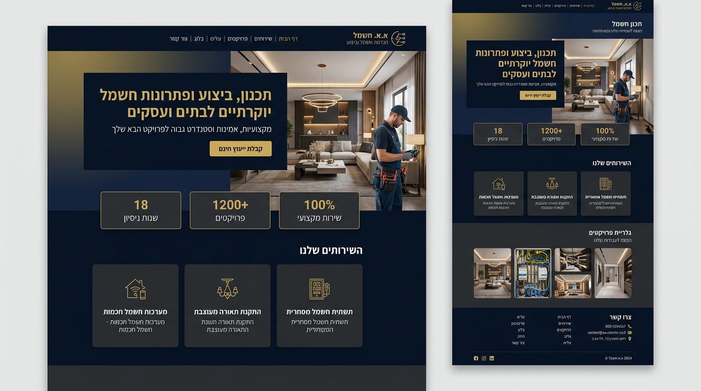
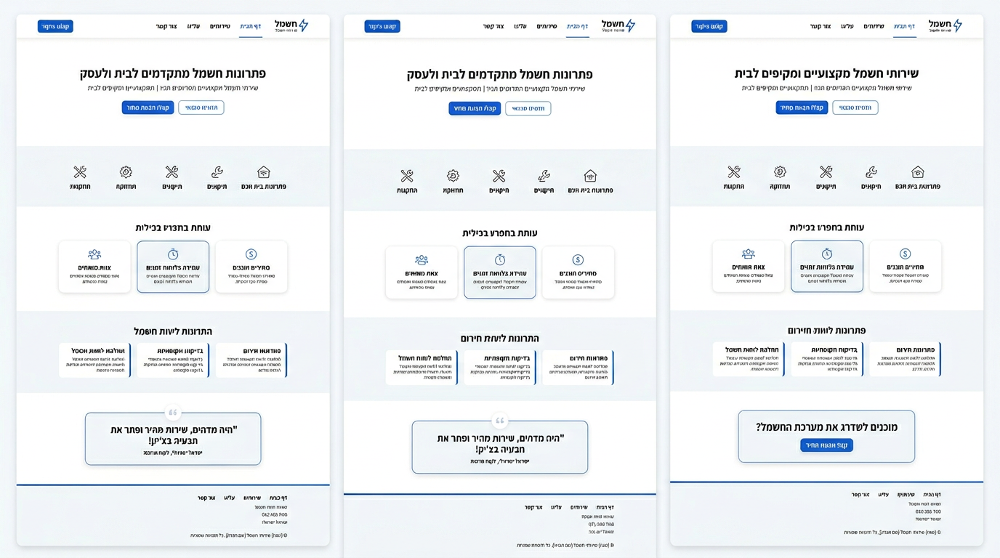
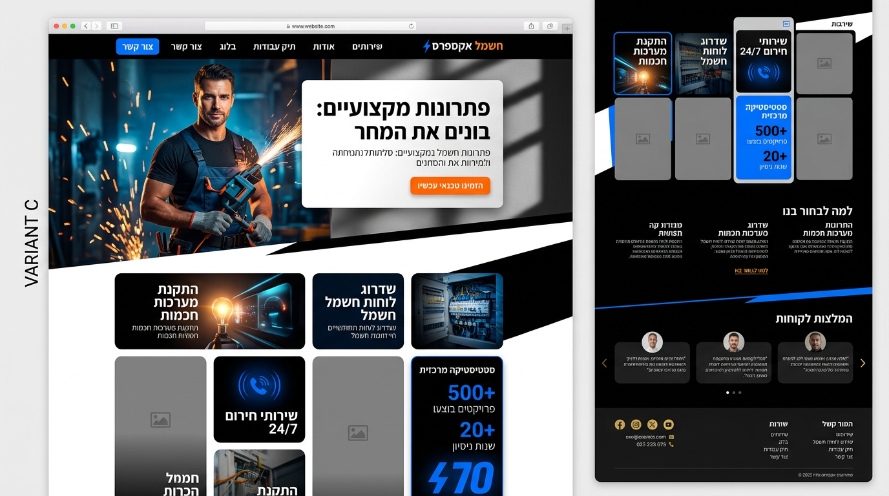

← חזרה לאתר
שלוש דוגמאות לעיצוב מלא של דף הבית
השוו בין האפשרויות ובחרו איזה כיוון מתאים — אפשר לממש בעמוד האמיתי אחרי הבחירה.
אפשרות א׳ — יוקה כההHero מלא רוחב, זהב וכחול כהה, כרטיסי שירות וגלריה

אפשרות ב׳ — מינימליסטי בהירהרבה לבן, מרווח, קווים דקים וכפתורי CTA שקטים

אפשרות ג׳ — מגזיני ונועזHero אסימטרי, רשת bento, טיפוגרפיה חזקה
